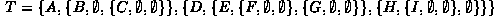

Data Structures and Algorithms
with Object-Oriented Design Patterns in Java
Data Structures and Algorithms
with Object-Oriented Design Patterns in JavaThere are many different applications of trees. As a result, there are many different algorithms for manipulating them. However, many of the different tree algorithms have in common the characteristic that they systematically visit all the nodes in the tree. That is, the algorithm walks through the tree data structure and performs some computation at each node in the tree. This process of walking through the tree is called a tree traversal .
There are essentially two different methods in which to visit systematically all the nodes of a tree--depth-first traversal and breadth-first traversal. Certain depth-first traversal methods occur frequently enough that they are given names of their own: preorder traversal, inorder traversal and postorder traversal.
The discussion that follows uses the tree
in Figure  as an example.
The tree shown in the figure is a general tree in the sense
of Definition :
as an example.
The tree shown in the figure is a general tree in the sense
of Definition :
However, we can also consider the tree in Figure
to be an N-ary tree (specifically, a binary tree
if we assume the existence of empty trees at the appropriate positions:

 Copyright © 1998 by Bruno R. Preiss, P.Eng. All rights reserved.
Copyright © 1998 by Bruno R. Preiss, P.Eng. All rights reserved.